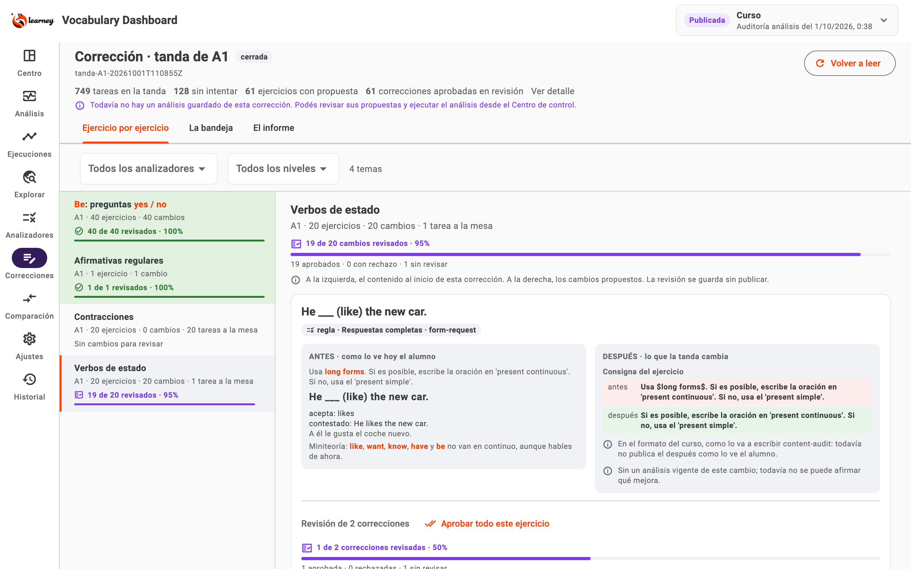
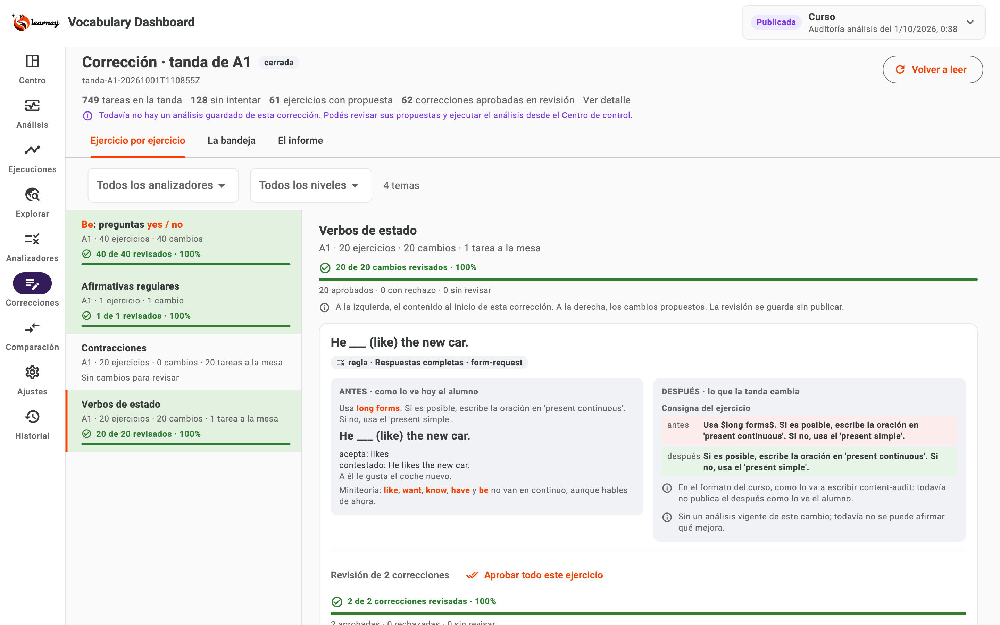

062ActivadoCorrecciones · 9 octubre 2026, 08:48 ART
Ahora se ve qué ya revisaste y qué falta
Cuenta y porcentaje en la lista lateral, el tema abierto y cada ejercicio.
La UI está reabierta con tus decisiones conservadas. Verde y 100% significan revisión completa; aprobar y rechazar cuentan como revisado, sin publicar ni completar análisis automáticos.
Al completar el tema, la fila queda verde

Prueba en memoria: 19/20; todavía queda una decisión.

Prueba en memoria: 20/20; fila y barra verdes.
Capturas de pruebas, no aprobaciones reales. Se mantuvo el diseño existente; el número y el ícono acompañan al color.
El total sigue los cambios del alcance visible
Dónde
Qué cuenta
Cuándo avanza
Lista lateral y tema
Ejercicios con propuesta, igual que “20 cambios”.
Todas las correcciones de ese ejercicio tienen decisión.
Cada ejercicio
Sus correcciones individuales.
Aprobaste o rechazaste cada corrección.
Desglose
Aprobados, con rechazo y sin revisar.
Actualiza después de guardar; deshacer baja el avance.
Filtros
Los cambios del tema dentro del filtro actual.
No agrega decisiones de otro alcance.
Sin controles o sin datos
Permanece pendiente o informa la ausencia.
Nunca inventa 100%.
Una fila completa puede incluir rechazos: revisado no significa todo aprobado. Los pendientes automáticos y la calidad se muestran por separado.
La app releída conserva las decisiones existentes
5 / 20
Afirmativas con be: decisiones guardadas; 15 pendientes.
6 / 18
Negativas con be: decisiones guardadas; 12 pendientes.
77 / 77
Pruebas aprobadas; una integración real omitida explícitamente.
Instantánea de la app reabierta a las 08:47 ART. Los once registros previos y el análisis guardado mantienen sus huellas; cero consultas nuevas.
Seguí revisando; el avance acompaña cada decisión
1Compará antes y despuésRevisá también los avisos de evaluación pendiente.
2Guardá tu decisiónAprobá o rechazá; el contador se actualiza.
3Buscá las filas verdes100% identifica temas sin decisiones pendientes dentro del alcance.
Mirar un cambio sin guardar una decisión no lo marca como revisado. La calidad del análisis sigue sin aprobarse.